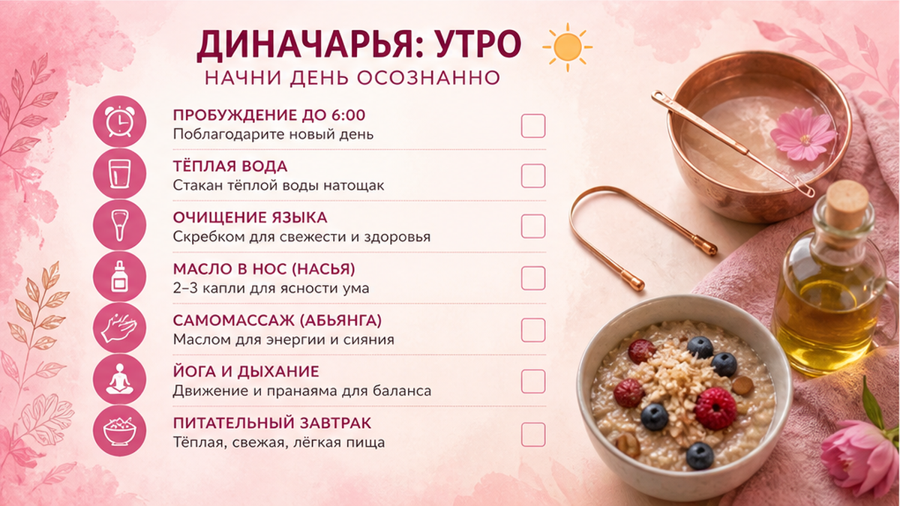

Как составить распорядок дня после 45 — не копируя чужой Pinterest на 20 пунктов. Диночарья в аюрведе — это ритм, который поддерживает пищеварение, сон и кожу. Утренний ритуал задаёт тон лицу на весь день. Ниже — простые правила диночарьи, утро/день/вечер и чеклист на 7 дней без фанатизма.
«Сделала идеальное утро — к обеду сорвалась, вечером лицо уставшее»? Часто проблема не в силе воли, а в распорядке, который не под ваш возраст и реальный график.
Разберём, что такое диночарья, как выстроить утренний ритуал, день и вечер после 45, типичные ошибки и дам чеклист на неделю — для женщин, которые хотят порядок без монастыря.
«Елена, я скачала чеклист на 15 страниц. Держалась два дня».
Спрашиваю: «Во сколько встаёте? Кто будит внуков? Готовите завтрак мужу?»
И сразу ясно.
Чужой распорядок не влезает в ваш дом.
Диночарья — не про идеал.
Про повторяемый ритм, который лицо узнаёт.
Диночарья — «день, проведённый правильно».
Не религия и не культ пробуждения в 4:30.
Это связка: подъём → движение → еда → отдых → сон.
Когда ритм скачет, страдает не только настроение.
Кожа реагирует первой: отёк, тусклость, «уставший» овал.
Механизм. Тело любит предсказуемость. Регулярный утренний ритуал снижает кортизол, улучшает пищеварение — а кожа получает больше питания и меньше воспаления. Хаос в распорядке = хаос на лице к вечеру.
❌ Мифы:
✅ Что реально работает:
Тип кожи влияет на уход внутри ритуала — как определить дошу по коже поможет не перегружать утро лишними шагами.
💡 Диночарья для лица — это не 10 баночек. Это повторяемый ритм, при котором кожа успевает восстанавливаться.

Утренний ритуал — сердце распорядка дня.
Не обязательно час медитации.
15 минут в одном порядке — уже система.
Базовый утренний ритуал (15 минут):
Миниплан.
Дни 1–7: один и тот же порядок утром, без новых продуктов.
Каждое утро: вода → дыхание → уход → движение → еда.
Не добавлять: скрабы, новые сыворотки, «эксперименты» в первую неделю.
Клиентки часто прыгают с кофе натощак на «идеальный аюрведический завтрак» за один день.
Срыв к обеду.
Мягче: сначала вода и SPF, потом завтрак, потом остальное.
Если утром лицо одутлое — проверьте вода, барьер и сон, прежде чем добавлять шаги.
| Время | Действие | Зачем для лица |
|---|---|---|
| 0–2 мин | Тёплая вода | Запуск пищеварения, меньше отёка |
| 2–5 мин | Дыхание | Снижение кортизола, меньше «зажатого» лица |
| 5–8 мин | Умывание + SPF | Барьер и защита от окна/улицы |
| 8–13 мин | Лимфа / фейс-практика | Овал, цвет, меньше «усталости» к обеду |
| 13–15 мин | Завтрак с белком | Стабильная глюкоза — меньше «сахарного» тусклого тона |
Распорядок дня — не только утро.
День после 45 часто «съедают» чужие задачи.
Диночарья здесь — про якоря, не про жёсткий график по минутам.
Якоря дня:
Сладкий перекус днём бьёт по лицу к вечеру — об этом в статье про сахар и гликирование.
Сделайте: поставьте напоминание «лицо» на 15:00 — не на идеальную медитацию, а на 8 медленных выдохов. Не делайте: ждать «свободного вечера», чтобы впихнуть весь уход.
День без якорей — это вечер, когда лицо «падает» к 18:00, а вы вините возраст.
Вечер закрывает день.
Если пропустить — утренний ритуал стартует с отёка и тусклости.
Миниплан на вечер (10 минут).
Умылись мягко. Сняли SPF, если был на улице.
На влажную кожу — один слой ухода, не три новых.
Три прохода лимфы: от центра лица к ушам.
Экран off за 40 минут до сна — или режим «чтение».
Лёгкий ужин за 2–3 часа до сна, не «перекус в 23:00».
После 45 сон важнее любой маски.
Без него распорядок дня рассыпается на второй день.
Если засыпаете с телефоном — начните не с «запрета», а с переноса зарядки в другую комнату.
Один шаг.
Не десять.
Неделя — минимум, чтобы тело «узнало» ритм.
Не оценивайте лицо каждый час.
Фото в одном свете — день 1 и день 7.
Если за неделю изменилось только утро, а вечер хаос — эффект будет половинный.
Работает связка: утренний ритуал + якоря дня + вечер.
Не ждите «другого человека» за 7 дней.
Ждите: меньше отёка утром, ровнее тон, спокойнее лицо к вечеру.
Чеклист на 14 дней.
Не менять: весь образ жизни за один понедельник.
Добавить: один якорь в день после первой недели.
Убрать: один «лишний» шаг из чужого списка Pinterest.
Контроль: фото раз в 5 дней, один свет.
Триггеры кожи — диагностика кожи поможет понять, что из ритуала реально ваше.
❌ Что ломает распорядок:
✅ Что помогает:
На консультациях вижу: «я всё делаю, но лицо серое». Открываем день — кофе, пропуск завтрака, телефон до полуночи.
Убираем один пункт — добавляем белок и вечерний уход.
Через 10 дней тон ровнее.
Не магия.
Ритм.
Диночарья после 45 — не монастырь. Это распорядок дня, который вы реально повторяете, а не стыдитесь в воскресенье.
И последнее: утренний ритуал работает, когда вечер его не ломает.
Начните с трёх шагов — вода, SPF, 5 минут для лица.
Остальное нарастите на второй неделе, если захочется.
Распорядок дня в аюрведе: подъём, гигиена, еда, работа, отдых, сон — в ритме, который поддерживает здоровье. Для лица это значит меньше хаоса и стресса, больше предсказуемого восстановления.
Не по чужому шаблону. Ориентир — 7–8 часов сна и один и тот же подъём ±30 минут. Если встаёте разбитой — сначала сон, не «ранний подъём ради ритуала».
От 5 до 20 минут. База: вода, уход, SPF, короткое движение. Длиннее — только если вписывается в жизнь без срывов.
Не для старта. Достаточно воды, ухода, SPF, движения и еды в ритме. Экзотика — после стабилизации, с врачом при хронических болезнях.
Через сон, пищеварение, стресс и стабильный уход. Меньше кортизола и скачков сахара — ровнее тон, меньше отёка и «усталого» овала.
Да. Возраст — не блокер. Важнее не копировать чужой график, а собрать свой на 5–7 шагов.
Сократите до трёх пунктов: вода, SPF, 2 минуты дыхания. Остальное перенесите на вечер, но не пропускайте оба блока неделями.
Не добавляйте 10 новых правил. Одно изменение в день. Если сорвались — следующий день без «наказания», просто повторите базу.
Нет. Но стабильный завтрак и меньше сладкого днём поддерживают лицо. Подробнее — в материале про сахар и кожу.
Меньше отёка утром, спокойнее лицо к 18:00, лучше сон. На фото в одном свете — через 7–14 дней.
Бессонница, резкая слабость, гормональные скачки — не стройте режим в одиночку.
Достоверность: материал основан на практике Елены Шимановской и общеизвестных принципах аюрведической диночарьи. Не медицинская рекомендация. При хронических заболеваниях — врач.
🔥 Мой Telegram-канал «Silver Cream»
❓ Как у вас с утренним ритуалом — есть стабильный порядок или каждый день с нуля? Со скольки пунктов начали бы диночарью? Напишите в комментариях ⤵️